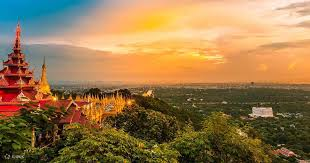
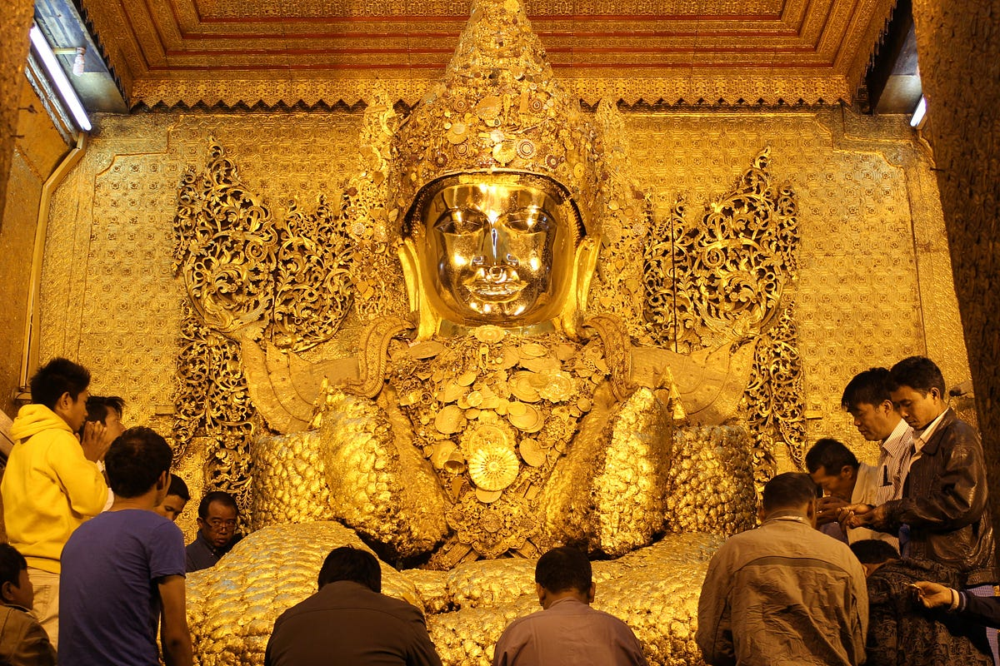

About My Hometown
Mandalay is located in central Myanmar. It's a city known for its rich history, vibrant culture, and breathtaking landmarks like the Mahamuni Pagoda and U Bein Bridge.
Places to Visit

Mandalay Palace
The last royal palace of Myanmar’s kings — rich in history and design.
U Bein Bridge
The world’s longest teak bridge, perfect for sunsets and reflection.

Mahamuni Pagoda
A sacred Buddhist site home to the revered Mahamuni Buddha image.